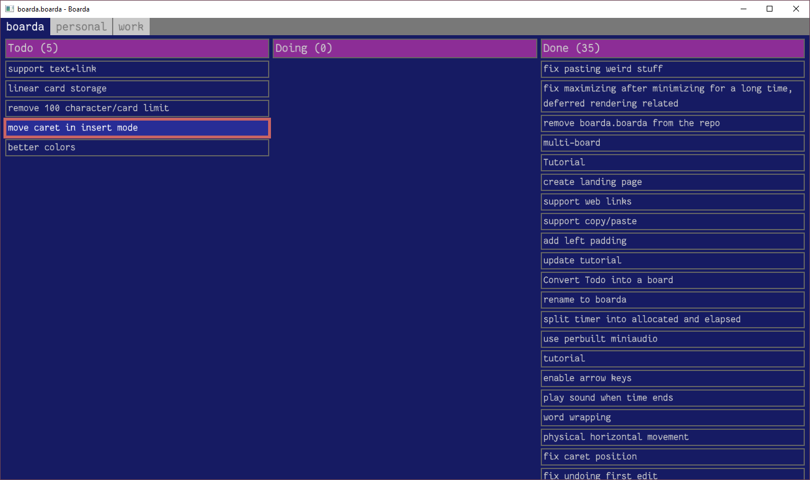

Boarda
Focused Offline Kanban Board
Download For WindowsLatest Release 25/12/2023

Timers
Use timers for tracking cards.
Here I set timer for 5 seconds.
Start then pause it.
Then remove the time.
OS Integration
Copy and paste text into boarda.
Open card links in the browser.
Search
Easy search for text in cards.
Made using Zig raylib miniaudio